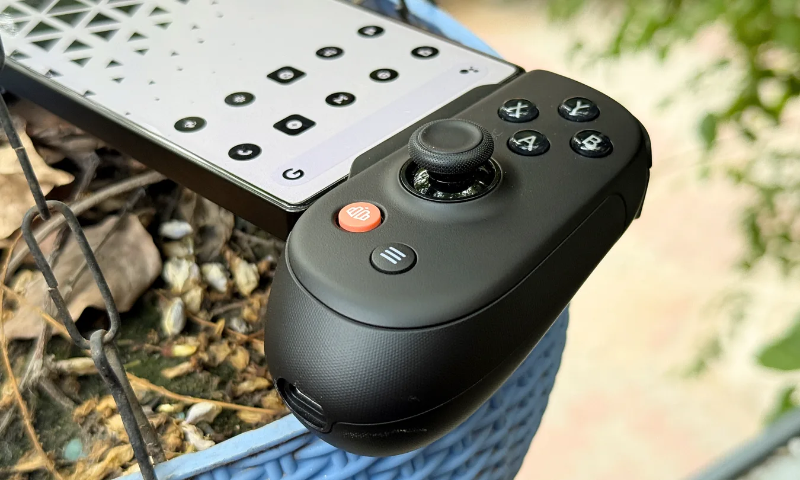

Breaking News
 September 14
September 14
by Casey Quinn
Apple is developing two gaming controllers for iPhone that could launch under the Beats brand, expanding the company’s presence in mobile gaming accessories.
Apple is said to be gearing up to enter the gaming controller market with two new devices aimed at the iPhone. There has been no official announcement on the products, but recent reporting indicates Apple has been working on gaming controllers for more than a year as it seeks to expand its presence in mobile gaming hardware. The controllers could be a new path for Apple, which has centered its gaming strategy on hardware like the iPhone, iPad, and Mac, rather than making dedicated gaming accessories. The rumored project would give iPhone users a first-party controller option built specifically for Apple's ecosystem. Two unreleased Apple gaming controllers have been discovered in macOS 26.7 beta code, reports Bloomberg’s Mark Gurman. The references appeared in Mac software, but the controllers are said to be for use with the iPhone. The announced expansion comes at a time when mobile gaming is becoming an ever more important part of the wider gaming industry. Modern iPhones have the processing power and graphics capabilities to run ever-more sophisticated games, and the emergence of cloud gaming and console-quality games on mobile has expanded the potential market for dedicated accessories. Apple’s move also may give the company more control over the gaming experience that surrounds its smartphones. A first-party controller could have a tighter integration with iOS features and Apple’s existing gaming ecosystem than third-party accessories. However, the company has yet to confirm the controllers, specs, pricing, or release schedule. Details of the hardware are still scant, and the reported products are thus to be seen as work in progress and not as confirmed upcoming products. If released, the controllers would still be an interesting expansion of Apple's hardware strategy and could bolster the iPhone's standing as a dedicated mobile gaming platform.
One of the more intriguing aspects of the rumored project is that the controllers could be sold under the Beats brand instead of the Apple brand. Executives at Beats are setting the direction of the project, according to Gurman. Apple bought Beats in 2014, and the brand has been used on products that sit within the wider Apple ecosystem but have an identity of their own. Beats is known for its headphones and speakers, but the company is also branching into accessories. Beats for gaming hardware would enable Apple to get into a new category without necessarily placing the product in the flagship Apple-branded accessory space. The Verge reported that Apple has used Beats to tap into new product categories and bring in consumers who might want more accessible products. That positioning could be especially relevant in gaming, where consumers have plenty of controller options already from established accessory makers. Some companies have made products specifically designed to make your smartphone more like a traditional gaming device, like Backbone. It could then compete with existing mobile gaming accessories and present an opportunity for Apple to differentiate in the areas of ecosystem integration and brand recognition, with a Beats-branded controller. The branding strategy could also allow Apple to try a product category that does not fit well with its traditional premium hardware lineup. Gaming controllers tend to be more niche than Apple’s mainstream accessories, and the Beats brand might allow more room for design and marketing. Gizmodo also pointed out the potential for Beats to serve as a conduit for products that do not fit into Apple’s more polished standard hardware family. But the branding is not yet confirmed. Apple has not publicly said Beats will make or sell the rumored controllers, and branding could change before any eventual release.
A dedicated controller could provide Apple with another way to sell the iPhone as a serious gaming platform. The company’s smartphones already support a wide range of controller-compatible games, while increasingly powerful processors have made it possible for developers to bring more demanding titles to iOS. Having a first party or tightly integrated controller could make that experience more attractive to users who want physical controls rather than relying on touch screen interfaces. This can be especially important for games that have tight inputs. Physical buttons, analog sticks, and triggers can be of great benefit to racing games, action titles, role-playing games, and console style releases. The controller could also help Apple integrate its iPhone hardware and services deeper into its ecosystem. That would be a great dedicated accessory for Apple Arcade and other gaming services. It would give developers a standard piece of hardware to consider when designing games. The reported development comes as Apple is making wider changes to its product portfolio. The company’s recent launch of new premium hardware, including the iPhone Duo and other new devices, is part of its ongoing effort to explore new categories and experiences. Gaming could provide Apple with another way to increase the usage of its devices. While a controller would not necessarily make the iPhone a direct replacement for traditional consoles, it could make mobile gaming more appealing to users who want a more conventional experience. The biggest hurdle will be convincing consumers that Apple’s controller offers enough value to justify yet another accessory, when there are already dozens of third-party options. Integration will thus be a key factor. If Apple’s controller can offer a seamless pairing, strong compatibility and software features that competing accessories simply cannot match, the product could have a meaningful advantage.
As reports of Apple’s gaming ambitions ramp up, there are still some key questions that have yet to be answered. The company does not officially announce the controllers, and there is no confirmed launch date, pricing information, or detailed specification sheet now. While it is true that references to controllers have been spotted in beta versions of software for macOS, and that would suggest Apple is working on such hardware, that does not necessarily mean products are imminent. Apple routinely tests products internally that may eventually be delayed, changed, or canceled. The presence of two different controllers could also suggest Apple is exploring different directions for mobile gaming hardware. But it is unclear exactly how the reported devices differ, or what their precise designs are. If the products ever reach the consumer, the success of the product may be very dependent on price and compatibility. There are already established products in the mobile controller market, so Apple faces a competitive landscape. The Beats branding could help set the devices apart from Apple’s more traditional accessories and make the company’s foray into gaming less of a disruption to its existing product strategy. Gaming is seen by Apple as a huge market opportunity beyond just selling hardware. A healthier gaming ecosystem would mean more time spent on iPhones, more support for services like Apple Arcade, and more incentive for developers to build more complex experiences for Apple’s platforms. The rumored controllers feel like something that’s part of a bigger opportunity, not just another accessory. But for now, Apple's gaming hardware plans are unofficial. Should the company move forward, a Beats-branded controller might be its most direct attempt yet to compete in the burgeoning mobile gaming accessory market.

Casey Quinn is a U.S. technology reporter covering innovation, digital policy, and emerging trends in the tech industry.